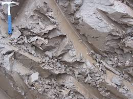
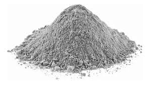
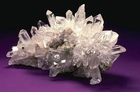
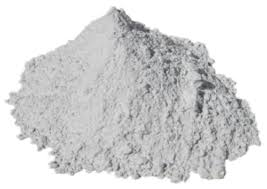
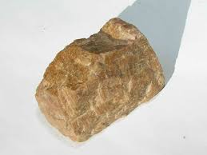
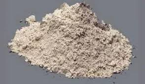
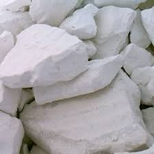
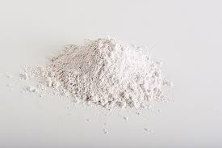

Materiales en Ceramica
La materia prima es la arcilla. Se emplea agua, sílice, plomo, estaño y óxidos metálicos. Para la cerámica llamada gres se utiliza una arcilla no calcárea y sal. Otro material importante para otro tipo de cerámica es el caolín mezclado con cuarzo y feldespato. Mi trabajo es en gress se hornea a 1175 grados, los componentes son Arcilla, Cuarzo, Feldespato y Caolin.
Arcilla
 La arcilla es una roca sedimentaria compuesta por agregados de silicatos de aluminio hidratados procedentes de la descomposición de rocas que contienen feldespato, como el granito. Presenta diversas coloraciones según las impurezas que contiene, desde el rojo anaranjado hasta el blanco.
Cuarzo
 El cuarzo es un mineral compuesto de sílice (SiO2). Tras el feldespato, es el mineral más común de la corteza terrestre estando presente en una gran cantidad de rocas ígneas, metamórficas y sedimentarias. Destaca por su dureza y resistencia a la meteorización en la superficie terrestre.
Feldespato
 Los feldespatos son un grupo de minerales tecto y aluminosilicatos que corresponden en volumen a un 60 % de la corteza terrestre. La composición de los feldespatos constituyentes de rocas corresponde a un sistema ternario compuesto de ortoclasa (KAlSi3O8), albita (NaAlSi3O8) y anortita (CaAl2Si2O8).Los feldespatos con una composición química entre anortita y albita se llaman plagioclasas, en cambio, los feldespatos con una composición entre albita y ortoclasa se llaman feldespatos alcalinos. El feldespato es un componente esencial de muchas rocas ígneas, sedimentarias y metamórficas de tal modo que muchas de estas rocas se clasifican según su contenido de feldespato.
Caolin
 La caolinita es un mineral de arcilla que forma parte del grupo de minerales industriales, con la composición química Al2Si2O5(OH)4 . Se trata de un mineral tipo silicato estratificado, con una lámina de tetraedros unida a través de átomos de oxígeno en una lámina de octaedros de alúmina. Las rocas que son ricas en caolinita son conocidas como caolín o arcilla de China.